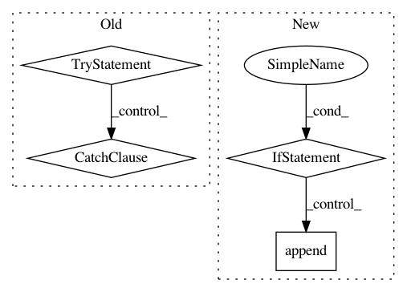

c9e73e23d952569574d23aafad6479caa5828b49,examples/np_semantic_segmentation/feature_extraction.py,PalmettoClass,get_pmi_score,#PalmettoClass#Any#,38
Before Change
// in order to normalize it
candidates.extend(candidates[0])
response_list = []
try:
response_list.append(
self.palmetto.get_coherence(candidates, coherence_type="npmi"))
response_list.append(
self.palmetto.get_coherence(candidates, coherence_type="uci"))
except CoherenceTypeNotAvailable:
response_list.extend([0, 0])
except EndpointDown:
response_list.extend([0, 0])
return response_list
def stem(w):
After Change
response_list = []
try:
pmi_score = self.pmi_dict[tuple(candidates)]
if pmi_score:
response_list.append(pmi_score[0])
else:
response_list.append(0)
chi_sq_score = self.chi_sq_dict[tuple(candidates)]
if chi_sq_score:
response_list.append(chi_sq_score[0])
else:
In pattern: SUPERPATTERN
Frequency: 3
Non-data size: 4
Instances
Project Name: NervanaSystems/nlp-architect
Commit Name: c9e73e23d952569574d23aafad6479caa5828b49
Time: 2018-05-14
Author: amit.yaccobi@intel.com
File Name: examples/np_semantic_segmentation/feature_extraction.py
Class Name: PalmettoClass
Method Name: get_pmi_score
Project Name: microsoft/nni
Commit Name: 08af7771d1f1149f3da5a98bcdbf7e65abd409ba
Time: 2020-12-27
Author: Quanlu.Zhang@microsoft.com
File Name: nni/retiarii/strategies/tpe_strategy.py
Class Name: TPEStrategy
Method Name: run
Project Name: autonomio/talos
Commit Name: 403ac880cf8f39ce63c55bc282154b5b9a7ef52a
Time: 2018-07-27
Author: mailme@mikkokotila.com
File Name: talos/scan.py
Class Name: Scan
Method Name: _run